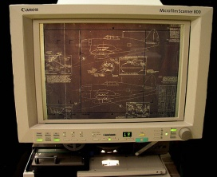
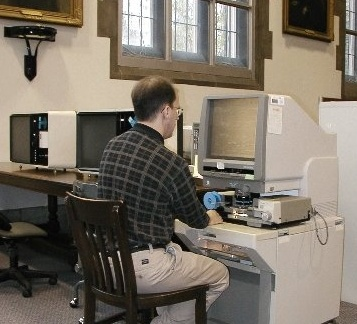
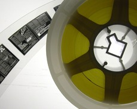

|
Tamer
Özel
Mak. Yük. Müh.
www.patents4technologies.com
Eylül 2005, CA / ABD
Not: Ýlk defa TurkCADCAM.net Dergisi 1. Sayýsýnda (Ocak-Þubat 2006) yayýnlanan bu makale, ek resimlerle birlikte Eylül 2007'de TurkCADCAM.net Portalý'ndan yayýna baþlamýþtýr...
1982 yýlýnda patent kütüphaneleri ile ilk tanýþtýðýmda þoke olmuþtum: Ya gördüklerim gerçek deðildi, ya da T.C.'de bana o güne kadar öðretilenler, söylenenler kökten yanlýþtý. Birkaç gün sonra anladým ki, yanlýþ olan T.C.'dekilerdi.
1982-84 arasýnda master için Kaliforniya Üniversitesi'nin Irvine Kampüsü'nde idim (Los Angeles). Özel ilgimden dolayý "toz metal" (powder metallurgy) konusunda seçtiðim bir kitap; konularý o kadar detaylý anlatýyordu ki, verilen bilgilerle atölyeye inip yazanlarý tekrar etmek mümkündü. Referanslarda da hep ABD patentlerinin numaralarý vardý. Bu kafamý karýþtýrdý. Çünkü, benim T.C.'den bildiðim; patent kutsal, gizli, öyle sýradan herkesin ulaþamayacaðý bir þeydi. Diðer taraftan ise; "referans" olarak verilen bir þey eriþilebilirdi. Sonunda kütüphanenin "reference desk*"ine giderek, utana sýkýla kitaptaki bir patent referansýný gösterdim, "buna nasýl ulaþabilirim?" diye sordum. Bana "Hay aptal! Buna eriþilmez!" diyeceðini beklerken, "4. katta devlet yayýnlarý (government publications) var, oraya giderseniz size yardýmcý olabilirler" dedi.
Þaþkýn þaþkýn, 4. kata çýktým, ayný soruyu sordum. Beni, "Offical Gazette" (Resmi Gazete) lerin toplandýðý, patent özetlerinin bulunduðu bir bölüme götürdüler. "Ýstediðiniz patentleri burada bulabilirsiniz" dediler. Referans verilen patentleri buldum, ancak ne olduðu anlaþýlamayan bir resimcik ve kýsa bir "özet" vardý. Benim okuduðum kitaplarda anlatýlan detaylar yoktu. "Hah!" dedim kendi kendime, "T.C.'de bize öðretilenler doðru, patent dedin mi sadece özetini görebilirsin, aslýný asla!" Ama yine de ürke ürke kütüphaneciye "Acaba bu patentlerin asýllarýna ulaþmak mümkün mü?" diye sordum. "Gayet tabii, Los Angeles Halk Kütüphanesi'nde (Los Angeles Public Library) bir patent kütüphanesi var" dedi. Yine çok þaþýrmýþtým.
Los Angeles Halk Kütüphanesi'ni aradým, yerini ve saatlerini öðrendim. Ertesi günü oraya gittim. Giriþteki kütüphaneciye patent kütüphanesinin yerini sordum. "4. katta" dedi. Gittim. Takriben 25 metrekarelik bir oda idi. Ürkerek içeri girdim. Bir adam kolumdan yakaladý. "Eyvah yakalandým iþte!" diye düþündüm. Adam Meksika kökenli olduðundan kýrýk bir Ýngilizce ile konuþtu, konuþtu. Konsantre olamadýðým için adamýn söylediklerinden hiç bir þey anlamadým. Adam beni azat edince bir köþeye büzüldüm. Sonra salona baþka birisi geldi, adam onu da yakaladý, baþladý konuþmaya. Bu sefer kulak misafiri oldum ve her söylediðini ciddiyetle dinledim. Meðersem adam kütüphane görevlisi imiþ ve patent kütüphanesine ilk gelenlere kütüphanenin nasýl kullanýldýðýný anlatýyormuþ...
Salon'da, mikrofilm halinde, 1790'dan o güne kadar alýnmýþ tüm ABD patentleri -üniversite kütüphanesinde de olan- her hafta yayýnlanan patent özetleri ve altý adet mikrofilm okuyucu vardý. Hala inanamýyordum. "Patentler eriþilemez" diye biliyordum, ama eriþilebiliyordu. Bu iþte bir terslik vardý. Patentler eriþilebiliyorsa, ya patentler hiç bir iþe yaramýyorlardý, ya da T.C.'de bellettikleri herþey yanlýþtý. Bunu anlamanýn tek bir yolu vardý; Bir tane patenti etüt etmek.


O sýralar araþtýrdýðým þýrýnga imalatý ile ilgili Becton Dickinson firmasýnýn patentleri arasýndan cam bir þýrýnganýn imalat patentini seçtim. Mikrofilm okuyucu 1982'de sayfa baþýna 25 cent'e fotokopi çekiyordu. Hatýrladýðým kadarýyla 18 sayfalýk patent idi. Kopyaladým. O hafta sonunu o patentin etüdüne ayýrdým. Etüt, Cumartesi ve Pazar, her gün 12 saatimi aldý. Pazar akþamý yerde miyim, gökte miyim, bilemiyordum. Çünkü o günkü teknik bilgimle o patentte anlatýlan makineyi yapabilirdim. O patentin mucidinin ismini hiç unutamadým; Henry Molinary.
Ve tabii T.C.'de belletilen hemen hemen herþeyin yanlýþ olduðu orada ortaya çýktý...
|